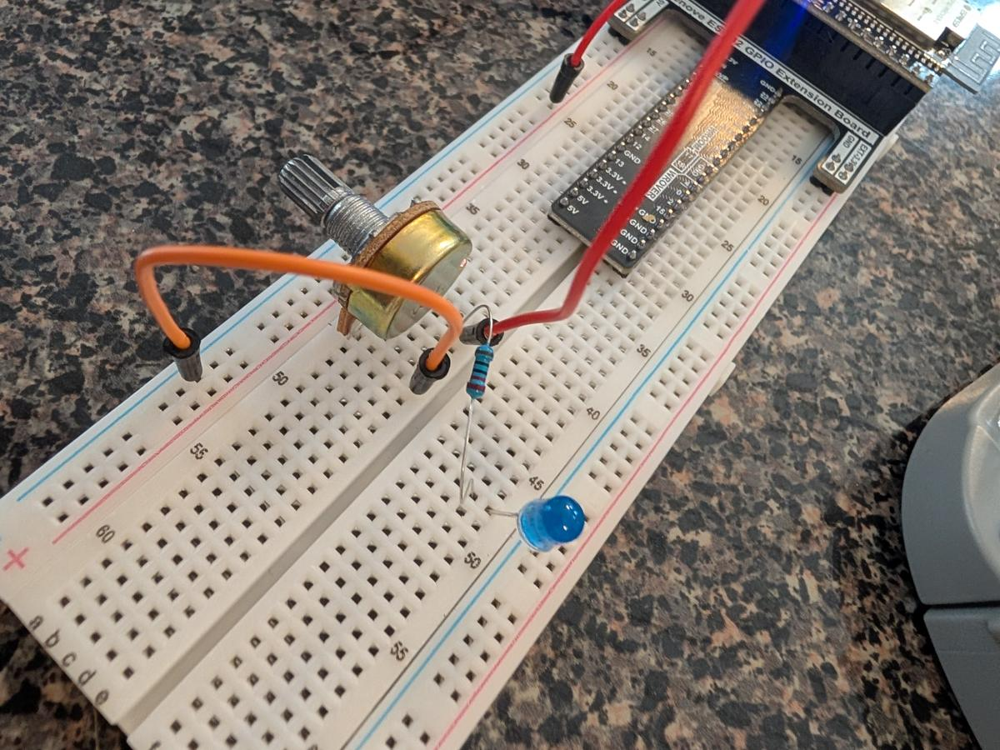
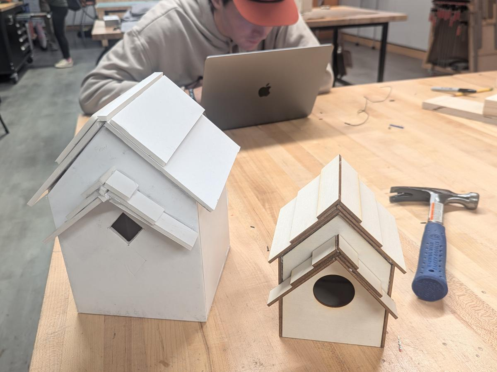
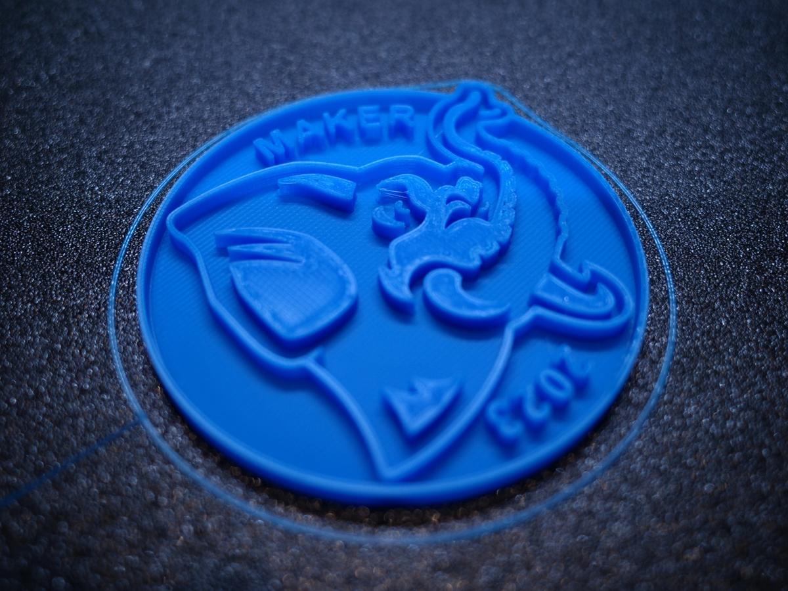
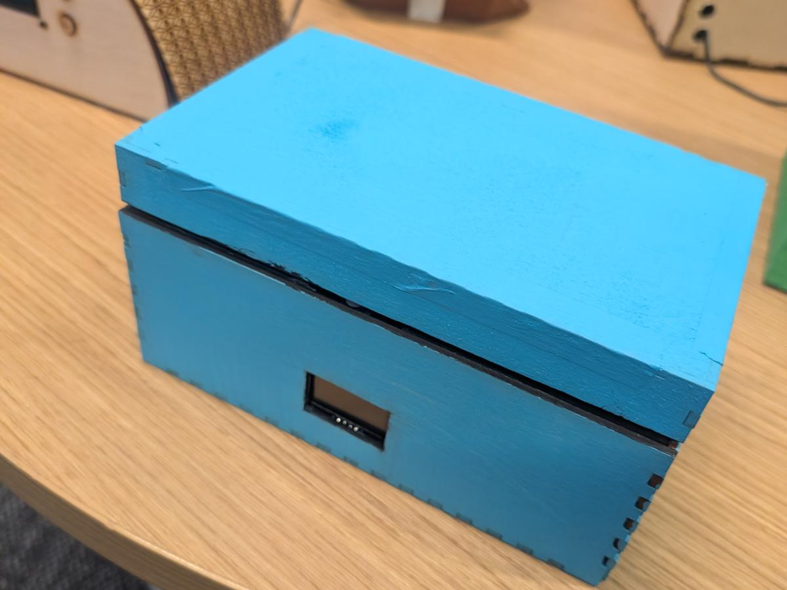

Fun facts
Beyond the resume
He flies gliders
He learned as a Belgian Air Cadet, and he holds private glider licenses from both the FAA and EASA, the European Union Aviation Safety Agency.
He works in the snow
He is an avalanche instructor with AIARE, the American Institute for Avalanche Research and Education, and an apprentice ski guide with the American Mountain Guides Association.
Five languages
English, French, and Dutch at native or bilingual level, German at professional level, and elementary Spanish.
Search and rescue
He is certified as a search and rescue technician (SARTECH II) and has completed FEMA incident command courses.
A patent
He is an inventor on the On Demand Locker System, the pickup design behind Amazon Locker.
France's tax platform
In Paris, he helped build France's online tax filing platform. It serves 35 million people.
An Emmy-recognized system
His teams built platforms for NFL.com, Disney, and Warner Bros., including an Emmy-recognized digital distribution system.
A finance degree
His degree is in finance, from the University of Massachusetts Dartmouth.
In the classroom
Build, test, learn
"As a pilot I learned that simulators don't replace flight time. They make every hour in the cockpit count." Thomas Van de Velde, on the idea behind TeachPilot




Get in touch
Office hours: go.tufts.edu/meet_tvdv · thomas.van_de_velde@tufts.edu